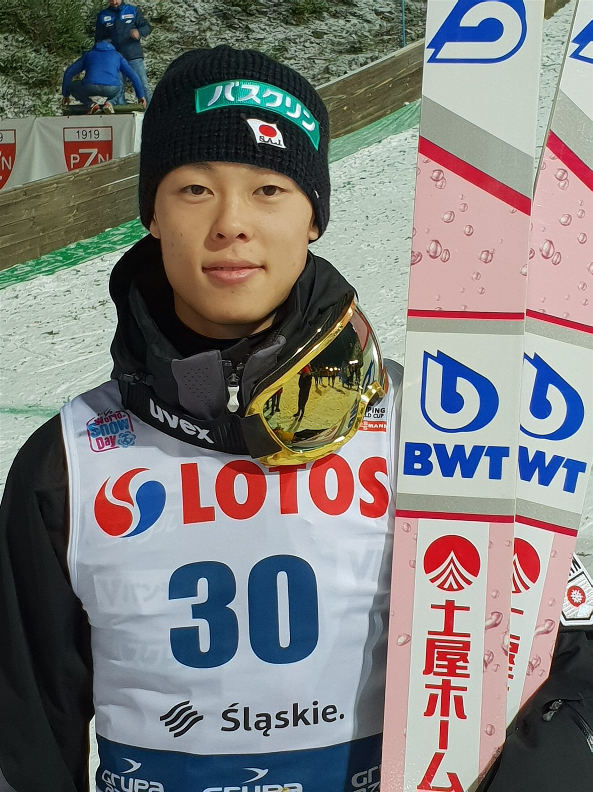
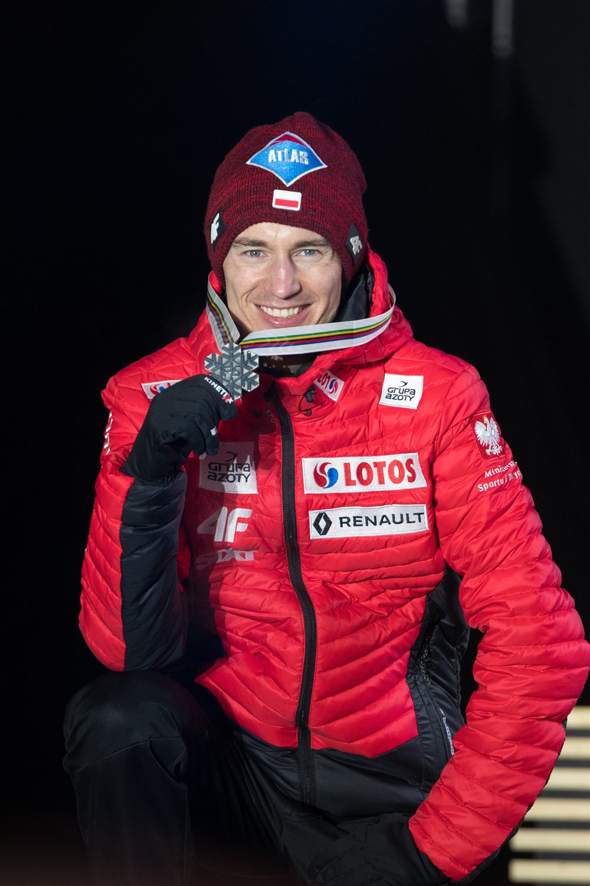
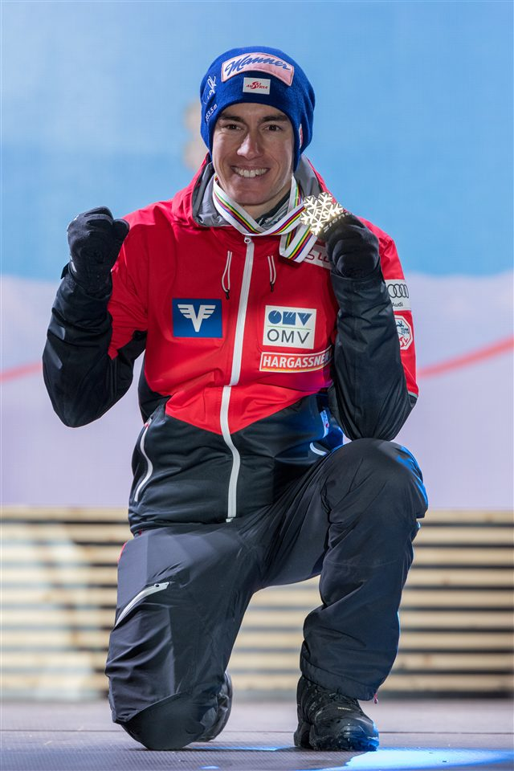
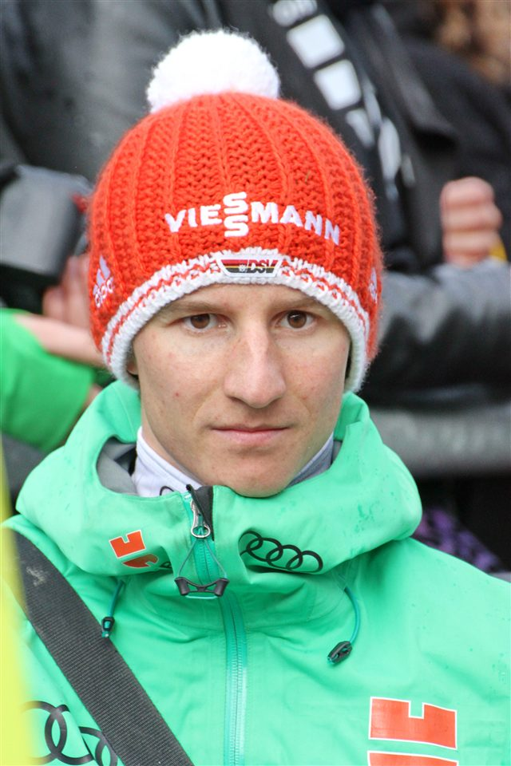
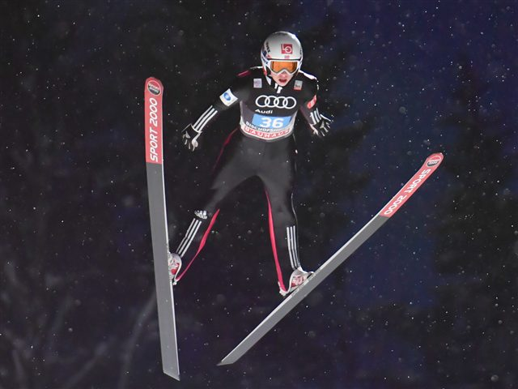
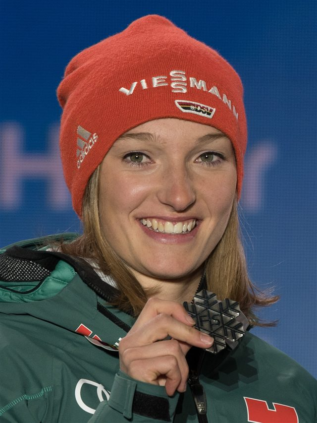

L'élan
Une descente accroupie sur la piste d'élan pour atteindre près de 95 km/h avant le décollage.

140 m
Le grand tremplin (HS)
95 km/h
Vitesse sur la table
5
Juges de style
Le saut à ski consiste à s'élancer d'un tremplin pour parcourir la plus grande distance possible… avec le plus de style. Après une descente d'élan à près de 95 km/h, l'athlète décolle de la table et plane skis en V pendant plusieurs secondes.
La note finale combine deux éléments : la distance parcourue (rapportée au point K du tremplin) et le style, évalué par cinq juges, jusqu'à la réception en télémark. Le vent et la position de barre d'élan sont compensés pour rester équitables.
Le Japonais Ryōyū Kobayashi et l'Autrichien Stefan Kraft figurent parmi les rois de la discipline, dans la lignée du légendaire Kamil Stoch.

Une descente accroupie sur la piste d'élan pour atteindre près de 95 km/h avant le décollage.
L'instant du décollage : l'extension parfaite au bord du tremplin lance toute la trajectoire.
Skis ouverts en V, corps allongé : l'aérodynamisme prolonge le vol de quelques mètres décisifs.
Le télémark, un pied avancé, est obligatoire pour valider tous les points de style.
Distance + style (5 juges, on retire la meilleure et la pire note) = score du saut.
Vent et hauteur de barre d'élan sont compensés par des points pour garantir l'équité.
Lieu
Trampolino Giuseppe Dal Ben, Predazzo — Val di Fiemme
Capacité
≈ 12 000 places au pied des tremplins
Accès
Navettes JO depuis Cavalese et Tesero. Site partagé avec le combiné nordique.
Billet
À partir de 40 € · 120 € (grand tremplin)
Température
Épreuves en soirée — prévoir -7 °C sous les projecteurs

 Autriche
Autriche Japon
Japon
 Allemagne
Allemagne
 Norvège
Norvège
Allemagne